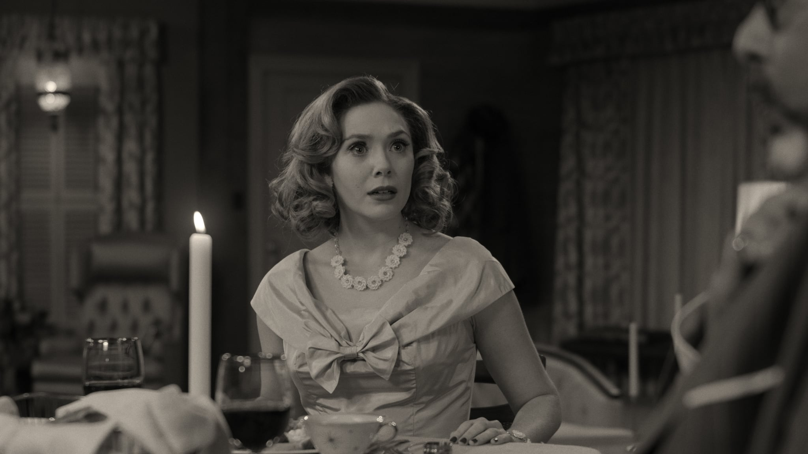
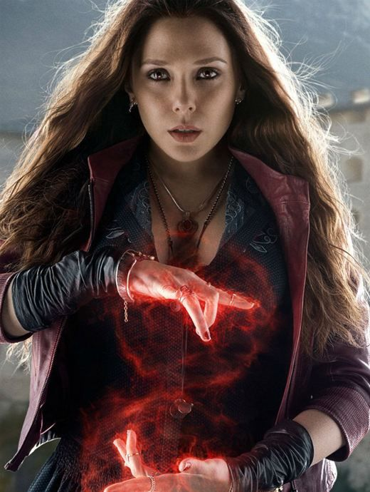

Um dos seres mais poderosos do Universo Marcel, personagem das HQs publicadas pela Marvel Comics, criada por Stan Lee e Jack Kirby. Pertenceu ao grupo Irmandade de Mutantes e entrou para os Vingadores, onde permanece como membro até os dias atuais. Sua primeira aventura foi em Uncanny X-Men #4 (1964).

Wanda
Wanda
Maximoff
Feiticeira Escarlate
Wanda Maximoff em WandaVision
Feiticeira Escarlate
Poderes
Wanda é uma humana aprimorada, seus poderes incluem ter o controle de Magia do Caos e manipulação das probabilidades, capaz de ressucitar mortos, alterar realidade, gerar campos de força e explosões.
